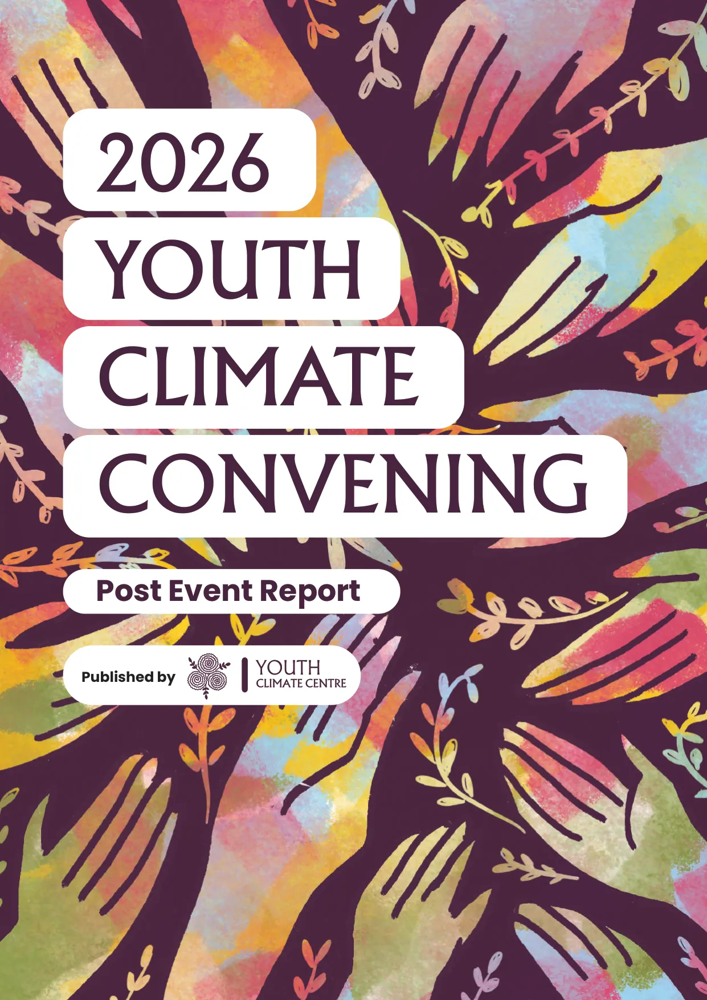

Stories
Personal journeys from youth leaders working across climate, education and justice.
Post Event Report
Youth climate convening is a space for young climate leaders to come together to build friendships, share their work and see each other as human beings. Young people have always longed for a space that they can belong to: Youth Climate Convenings make it happen. Learn about the story of 34 young leaders in the YCC 2026 report.
Personal journeys from youth leaders working across climate, education and justice.
Interactive sessions, activities and learnings captured throughout the convening.
Ideas for building resilient, inclusive and community-led climate action.
This report captures the ideas, conversations, workshops and collective imagination that emerged during the Youth Climate Convening.
It is designed not only as documentation, but also as an invitation for more young people to organize, collaborate and imagine just climate futures together.
Do you see yourself as a young climate leader?
Nominate yourself for YCC 2027Browse the publication online before downloading your own copy.

Loading interactive preview…
Prefer reading in full screen? Open PDF